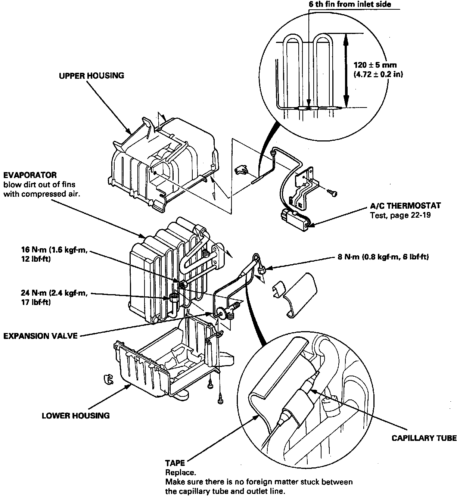

Heater-Evaporator Unit Overhaul
Overhaul
1. Pull out the A/C thermostat sensor from the evaporator fins.
2. Remove the self-tapping screws and clamps from the housing.
3. Carefully separate the housings and remove the evaporator.
4. If necessary, remove the expansion valve.
NOTE: When loosening the expansion valve nuts, use a second wrench to hold the expansion valve or evaporator pipe. Otherwise, they can be damaged.
5. Assemble in the reverse order of disassembly, and:
^ replace the 0-rings with new ones at each fitting, and apply a thin coat of refrigerant oil (ND-OIL 8: P/N 38899 - PR7 - AO1) before installing them.
NOTE: Be sure to use the right 0-rings for HFC-134a (R-134a) to avoid leakage.
^ install the expansion valve capillary tube with the capillary tube in contact with the suction line directly, and wrap it with tape.
^ reinstall the A/C thermostat sensor to its original location.